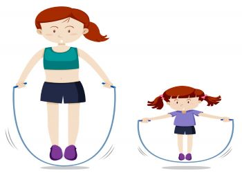
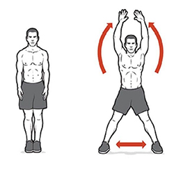
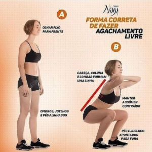

Com a pandemia do novo coronavírus as pessoas começaram a ocupar seu tempo livre com muitas atividades como: ler livros, assistir séries e filmes, animes, aprender um novo idioma. Contudo, não podemos apenas fortalecer nosso intelecto, devemos também cuidar da nossa saúde física. Todavia, também fomos impedidos de manter atividades ao ar livre, com todos os decretos governamentais que fizeram com que ficássemos em casa. Dito isso trago algumas atividades físicas que podem ser praticadas aí!! DENTRO DA SUA CASA.
Primeiro vamos falar um pouco sobre exercícios para os idosos.
ATENÇÃO: Primeiro faça uma avaliação do seu estado de saúde, para saber se você tem condições de fazer a atividade física. Em caso de dúvida, procure seu médico.
- Marcha Estacionária: Se sua casa for muito pequena, faça uma caminhada estacionária, ou seja, uma marcha sem sair do lugar. Eleva-se os joelhos alternadamente até a altura da cintura ou até onde for possível, mantendo sempre a postura ereta. Tente fazer de 20 a 30 minutos por dia. É um ótimo exercício para ajudar na circulação do sangue, melhorar a imunidade e evitar doenças.
-
Bola de Meia: Exercício para fortalecer os músculos das mãos e as articulações dos dedos. Fazer uma bola de meia ou usar uma bola de tênis ou qualquer outra bola pequena que caiba na mão. Colocá-la na palma da mão e, então, começar a apertar e soltar o objeto.

Agora vamos falar um pouco sobre exercícios para os mais jovens.
- Pular corda: Pular corda é uma atividade cardiovascular que exige quase nenhum preparo físico e pode ser divertida para todas as pessoas, independente da idade. Você pode pular corda sozinho ou mesmo em trio. Basta ter um espacinho a mais em sua sala e abusar dos pulos. Com esse exercício você pode fortalecer suas articulações, pode queimar calorias e ainda melhorar sua tonificação muscular.
Polichinelo: Em pé, com as pernas unidas e os braços estendidos ao lado do corpo, dê um salto para cima. Ao mesmo tempo, afaste os pés lateralmente e bata as mãos acima da cabeça. Volte para a posição inicial e depois agache, tocando as mãos no solo. Estenda as pernas e repita o exercício sem parar
Agachamento: O agachamento é muito bom para melhorar a postura, fortalecer os músculos das coxas, definir os glúteos e ajudar a ter uma barriga sarada. Com certeza é um dos exercícios mais completos que existem e é fácil de fazer. Para realizar o exercício, você precisa separar os pés na largura do quadril e colocar os braços para frente, flexione os joelhos e agache, faça três séries de 20 agachamentos com 30 segundos de intervalo entre uma série e outra.


